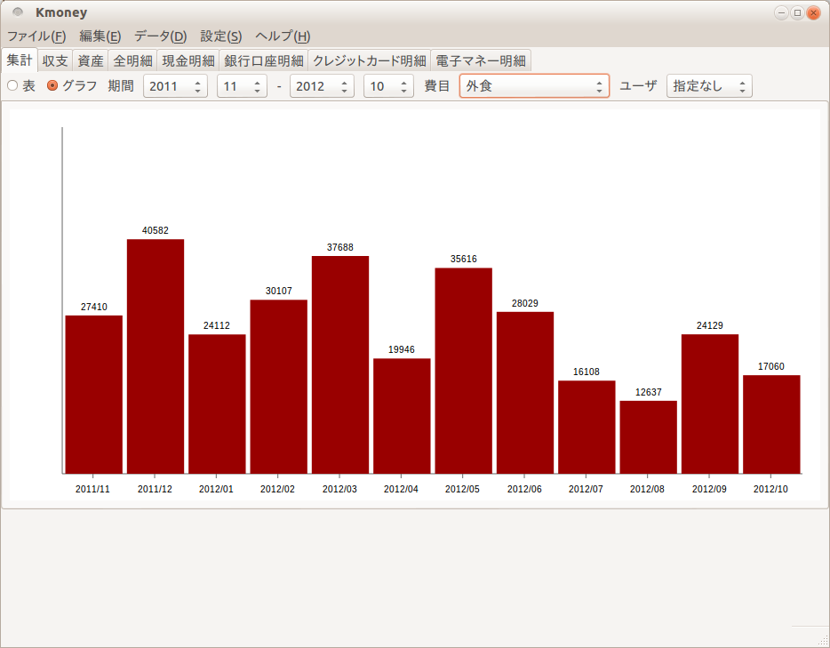

Kmoneyは、PC、タブレット、スマートフォンで使える家計簿ソフトです。
家計簿をつけていくうえで一番問題なのは、入力がメンドクサイことです。ふと気がつくと数週間分のレシートがたまってしまい、レシートを見ても何を買ったのか思い出せないことがあります。
それを防ぐための第一の方法は、レシートをためないこと、買い物の直後に入力することです。スマートフォンを使えば、買い物の帰り道、電車内や信号待ちの時間を使ってレシートを片づけることができます。
もう一つの方法は、銀行の入出金明細やクレジットカードの利用明細を使うことです。ウェブ上で取得できる明細のファイルを取り込めば、入力の手間が大幅に減ります。
Kmoneyは、この二つの方法を実現することを目指す家計簿ソフトです。
インストール
PC版とタブレット／スマートフォン版があります。
PC版はFirefoxの拡張機能です。アドオンマネージャでKmoneyを検索するか、addons.mozilla.orgのページからインストールしてください。
タブレット／スマートフォン版はandroidアプリです。Google Playからインストールしてください。
使い方
PC版についてはKmoney/PCの使い方のページをご覧ください。
ご協力のお願い
不具合に気がついた方や、機能改善の要望がある方は、GitHubのIssue Trackerに登録してください。
インポート機能はもっとさまざまな銀行やクレジットカードに対応したいと考えています。そのためには明細のフォーマットについての情報が必要です。未対応の銀行やクレジットカードに関して情報を提供していただけるとたいへん助かります。
開発状況
- PC版: v0.1を準備中
- タブレット／スマートフォン版: 未着手
開発の進捗状況はGitHubのプロジェクトページでご確認ください。ブログ(kazhik.tech)でも時々Kmoneyの状況について書いています。
開発履歴
- 2012/03/上旬 開発開始
- 2013/01/03 v0.1を公開